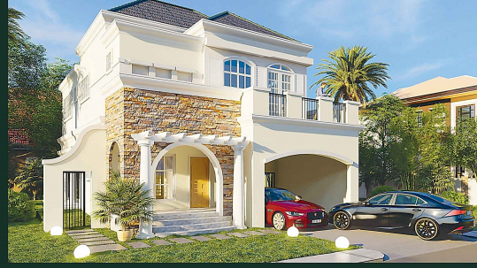

Property Highlights

Modern condominium developments located in fast-growing urban centers near universities, hospitals, and commercial districts. Ideal for students, professionals, and investors looking for rental income opportunities and long-term property value growth.
 Luxury gated residential communities inspired by Mediterranean architecture, offering premium homes
with complete amenities, landscaped surroundings, and secure family living environments.
Strategically located near major business hubs, shopping centers, and lifestyle destinations in
South Metro Manila.
Luxury gated residential communities inspired by Mediterranean architecture, offering premium homes
with complete amenities, landscaped surroundings, and secure family living environments.
Strategically located near major business hubs, shopping centers, and lifestyle destinations in
South Metro Manila.
 Well-planned suburban housing communities designed for families seeking affordable yet high-quality
living.
These developments offer convenient access to major highways, schools, hospitals, and transportation
routes connecting Cavite to Metro Manila.
Well-planned suburban housing communities designed for families seeking affordable yet high-quality
living.
These developments offer convenient access to major highways, schools, hospitals, and transportation
routes connecting Cavite to Metro Manila.